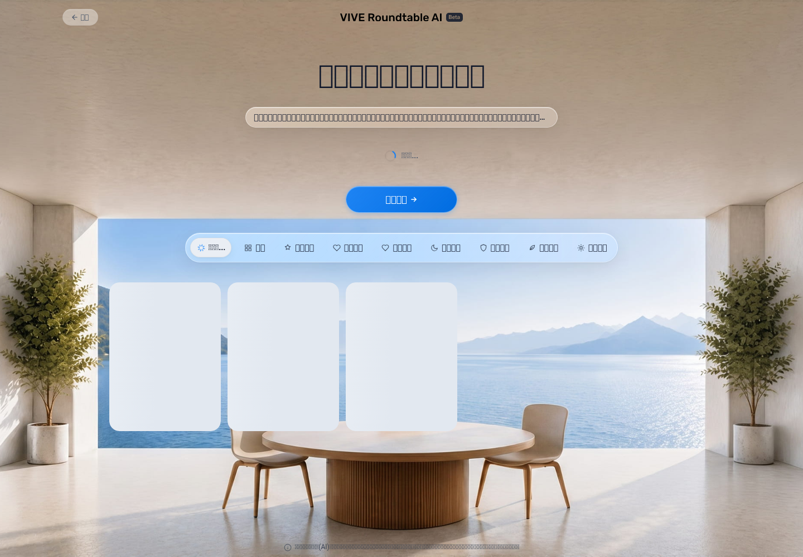
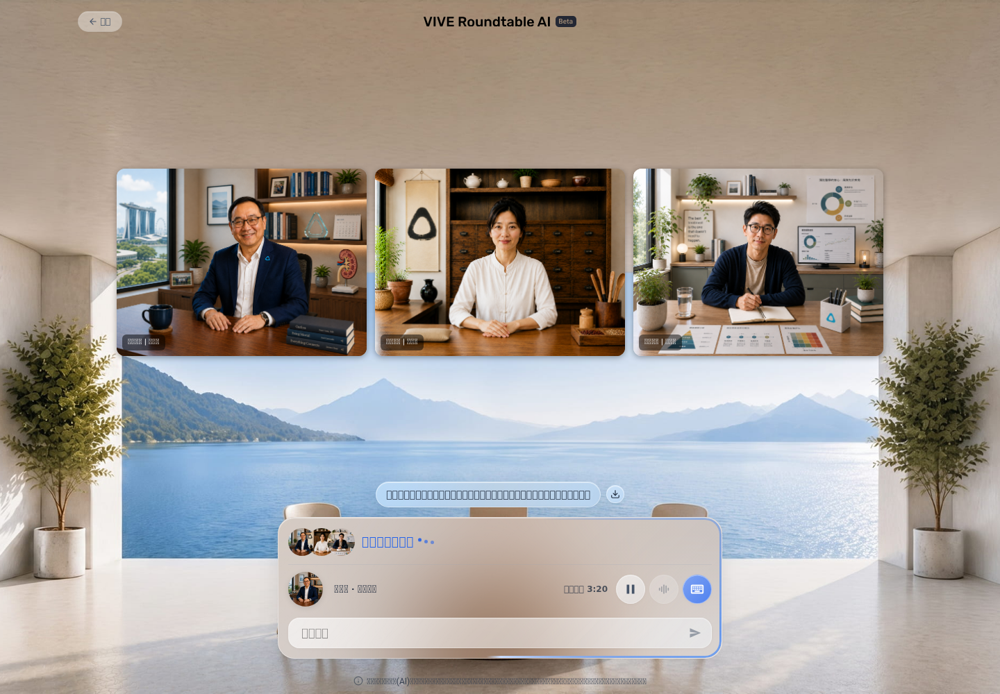
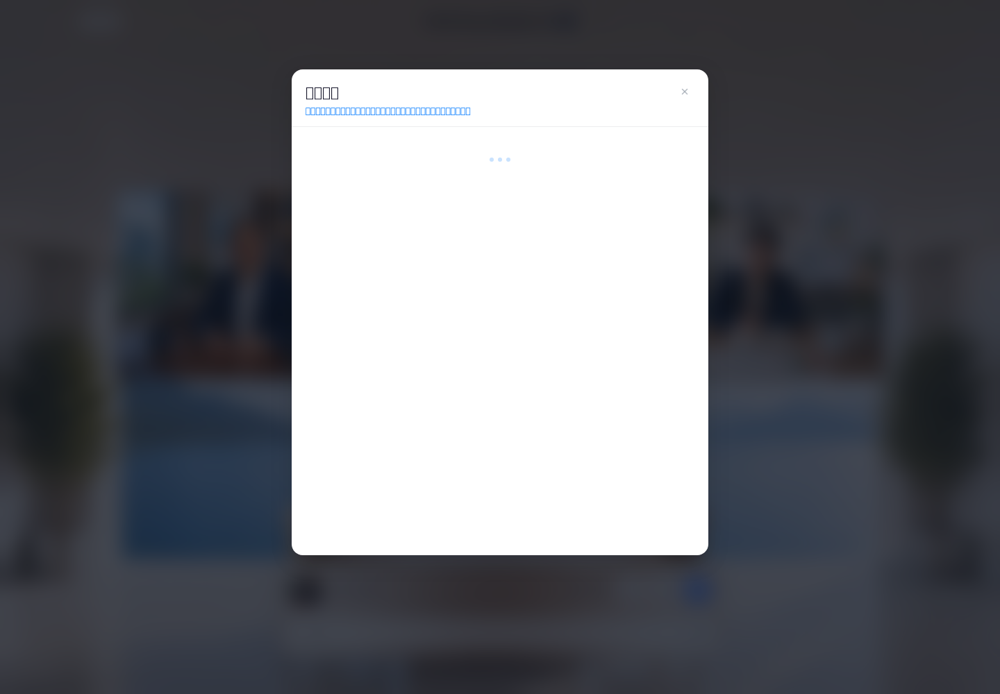

ID
F-01RoundTable Latest-Rule QA Report
Target: https://doppel-health.zeabur.app/group · Scope: End-user /group flow only; excludes /admin and /create · Run: 2026-06-08T06:00:00.038Z → 2026-06-08T06:04:23.220Z · Status: Review Draft, not lockdown.
12
Product PASS1
Product FAIL3
Product undetermined16
Matrix items executedLatest-rule check: Before this run I read the RoundTable runbook and active review log. This report uses the latest accepted rules as of 2026-06-08, not the earlier health-smoke scope.
Functional Matrix
Page 1 - Topic Selection / Homepage
What it tests
First-visit disclaimer and consentProduct result
PASSQA execution
COMPLETEVerified / passed
Disclaimer appeared before use; emergency/service/privacy content, privacy link, and consent action were visible; accepting unlocked homepage.Missing / failed
None.Reason / evidence
All criteria verified in first-visit run.screenshots/01-first-visit-consent.pngscreenshots/02-home-ready.png{kind=link}
{kind=link}
ID
F-02What it tests
Popular topic card to chatProduct result
PASSQA execution
COMPLETEVerified / passed
Hot topic preserved in chat and controls became usable in 3 timed runs.Missing / failed
None.Reason / evidence
All criteria verified.screenshots/16-hot-topic-chat.pngevidence/browser-run-latest-20260608.json{kind=link}
ID
F-13What it tests
Homepage voice input and STTProduct result
PASSQA execution
COMPLETEVerified / passed
Fake mic Mandarin WAV activated recording; STT 200 returned materially correct sleep-problem transcript; transcript appeared and could enter recommendation flow.Missing / failed
None.Reason / evidence
End-to-end homepage STT path verified.screenshots/03-home-mic-recording.pngscreenshots/04-home-stt-outcome.pngevidence/browser-run-latest-20260608.json{kind=link}
{kind=link}
Page 2 - Expert Matching / Selection
ID
F-03What it tests
Custom topic expert recommendationsProduct result
PASSQA execution
COMPLETEVerified / passed
Recommendations, categories, expert cards, and reasons appeared for the custom sleep topic in 3 timed runs.Missing / failed
None.Reason / evidence
All criteria verified.screenshots/05-expert-recommendations.pngevidence/browser-run-latest-20260608.json{kind=link}
ID
F-04What it tests
Manual expert selection overrideProduct result
PASSQA execution
COMPLETEVerified / passed
Selected expert count changed 3 -> 2 -> 3; final set carried forward.Missing / failed
None.Reason / evidence
Manual remove/add override verified.screenshots/06-manual-expert-selection.pngevidence/browser-run-latest-20260608.json{kind=link}
ID
F-05What it tests
Start discussion from expert selectionProduct result
PASSQA execution
COMPLETEVerified / passed
Start Discussion entered /group/chat with selected experts and topic; chat controls became usable.Missing / failed
None.Reason / evidence
All criteria verified.screenshots/07-custom-topic-chat.pngevidence/browser-run-latest-20260608.json{kind=link}
Page 3 - Group Chat
ID
F-06What it tests
Character voice outputProduct result
UNDETERMINEDQA execution
BLOCKEDVerified / passed
10 non-empty TTS/MP3 assets captured; ffprobe/volumedetect shows non-silent audio; TTS query text matches visible discussion topic/speaker context.Missing / failed
Actual browser/system speaker output to a user was not captured; missing/cut-off playback cannot be ruled out. Local Whisper transcription timed out and is not used as proof.Reason / evidence
Environment constraint remains: headless Chromium/host lacks reliable real output capture; assets are supporting evidence only.audio/03-200.mp3evidence/audio-analysis/03-200-volumedetect.logevidence/browser-run-latest-20260608.jsonID
F-07What it tests
Expert-to-expert speaker rotationProduct result
UNDETERMINEDQA execution
BLOCKEDVerified / passed
Multiple visible speaker states progressed; multiple non-empty TTS assets were captured across discussion turns.Missing / failed
Separate audible turns, voice-to-speaker match at device output, and absence of audible overlap/stall were not verified.Reason / evidence
Actual device/browser audio output capture unavailable.screenshots/07-custom-topic-chat.pngaudio/03-200.mp3audio/04-200.mp3evidence/audio-analysis/04-200-volumedetect.logID
F-08What it tests
Text interjection and semantic responseProduct result
PASSQA execution
COMPLETEVerified / passed
Text was submitted; subsequent TTS response content addressed half-night waking and daytime fatigue.Missing / failed
None for content path; real speaker playback remains covered by F-06.Reason / evidence
Semantic response content verified via captured TTS response text/audio asset.screenshots/11-text-interjection-outcome.pngaudio/05-200.mp3evidence/browser-run-latest-20260608.json{kind=link}
ID
F-09What it tests
Pause and resumeProduct result
UNDETERMINEDQA execution
BLOCKEDVerified / passed
Pause and resume UI states appeared; session remained intact.Missing / failed
Actual audible speech stop/resume and no duplicated audio were not verified.Reason / evidence
UI state alone is insufficient for product verdict under latest rule.screenshots/09-paused-ui.pngscreenshots/10-resumed-ui.png{kind=link}
{kind=link}
ID
F-10What it tests
Early summary behaviorProduct result
PASSQA execution
COMPLETEVerified / passed
Summary opened early and clearly stated conversation content was too limited; modal remained readable with actions.Missing / failed
None.Reason / evidence
All criteria verified.screenshots/08-early-summary.pngevidence/browser-run-latest-20260608.json{kind=link}
ID
F-11What it tests
Back and confirm exitProduct result
PASSQA execution
COMPLETEVerified / passed
Back opened confirmation dialog with cancel/confirm actions; cancel state was captured after flow.Missing / failed
None.Reason / evidence
Exit-prevention dialog verified.screenshots/15-back-confirm.pngevidence/browser-run-latest-20260608.json{kind=link}
ID
F-14What it tests
Chat push-to-talk and STTProduct result
PASSQA execution
COMPLETEVerified / passed
Recording UI activated; two stop actions returned STT 200; transcripts materially matched Mandarin sleep request; later expert responses addressed sleep interruption.Missing / failed
None for STT path; actual audible reply playback remains covered by F-06.Reason / evidence
Click-to-toggle PTT and repeat STT interaction verified.screenshots/12-chat-mic-recording.pngscreenshots/13-chat-stt-outcome.pngscreenshots/13b-chat-stt-repeat-outcome.pngevidence/browser-run-latest-20260608.json{kind=link}
{kind=link}
{kind=link}
ID
F-15What it tests
Full summary with sufficient historyProduct result
FAILQA execution
COMPLETEVerified / passed
Full-summary test executed after custom topic, expert turns, text interjection, and two voice interactions; summary modal opened.Missing / failed
Summary contained only the topic and no meaningful conversation points.Reason / evidence
Confirmed product issue: useful non-empty summary content absent despite sufficient tested history.screenshots/14-full-summary-attempt.pngevidence/browser-run-latest-20260608.json{kind=link}
Cross-page / Overall Experience
ID
F-12What it tests
Mobile viewport usabilityProduct result
PASSQA execution
COMPLETEVerified / passed
390x844 viewport had no horizontal overflow; core homepage controls remained usable.Missing / failed
None for tested mobile scope.Reason / evidence
Mobile smoke criteria verified.screenshots/17-mobile-home.pngevidence/browser-run-latest-20260608.json{kind=link}
ID
F-16What it tests
User-flow stabilityProduct result
PASSQA execution
COMPLETEVerified / passed
Completed latest-rule journey without user-visible crash, freeze, unexpected reload, or blocked core action.Missing / failed
Engineering warnings: 72 failed requests, mostly third-party ad/activeview aborts; 3 zero-byte TTS responses; 2 response.body capture errors.Reason / evidence
Warnings did not block observed core user flow; kept in appendix.evidence/browser-run-latest-20260608.jsonUser-Perceived Performance
| Area | Runs seconds | Median | Slowest | Status |
|---|---|---|---|---|
| Initial page | 3.272, 4.854, 1.502 | 3.272 | 4.854 | VERIFIED |
| Consent | 3.869, 4.934, 2.04 | 3.869 | 4.934 | VERIFIED |
| Home readiness | 1.253, 4.549, 5.807 | 4.549 | 5.807 | VERIFIED |
| Hot topic | 4.42, 4.814, 4.675 | 4.675 | 4.814 | VERIFIED |
| Custom topic | 4.644, 4.598, 4.064 | 4.598 | 4.644 | VERIFIED |
| Start discussion | 1.257 | 1.257 | 1.257 | VERIFIED |
| Text interjection | 1.836 | 1.836 | 1.836 | VERIFIED |
| Homepage mic | 3.339 | 3.339 | 3.339 | VERIFIED |
| Homepage STT | 14.014 | 14.014 | 14.014 | VERIFIED |
| Chat mic | 1.239 | 1.239 | 1.239 | VERIFIED |
| Chat mic reply | 7.114 | 7.114 | 7.114 | VERIFIED |
| Early summary | 1.251 | 1.251 | 1.251 | VERIFIED |
| Pause UI | 0.625 | 0.625 | 0.625 | VERIFIED |
| Resume UI | 0.107 | 0.107 | 0.107 | VERIFIED |
| First audible expert speech | — | — | — | BLOCKED: Actual device output unavailable; returned assets do not prove heard playback. |
| Speaker transition / pause / resume audible timing | — | — | — | BLOCKED: Actual device output unavailable. |
Audio And STT Evidence
Homepage STT
Recording → stop → STT 200 → materially correct visible Mandarin transcript.
Chat STT repeat
Two recording/stop interactions returned STT 200. Later expert response assets addressed the sleep-interruption topic.
TTS assets
10 non-empty MP3 assets captured and volumedetect non-silence confirmed. 3 zero-byte TTS responses are listed as engineering warnings.
Playback limit
Actual user-heard device playback remains blocked; no product PASS for audible speech/rotation/pause.
Key Evidence



Engineering Appendix
Failed requests: 72, mostly third-party ad/activeview aborts. Errors: [{"phase":"audio-response-save","url":"blob:https://doppel-health.zeabur.app/ba501870-b885-4431-9a6a-28e60cd874aa","message":"response.body: Protocol error (Network.getResponseBody): No resource with given identifier found"},{"phase":"audio-response-save","url":"https://doppel-health.zeabur.app/api/tts","message":"response.body: Protocol error (Network.getResponseBody): No resource with given identifier found"}]. Local Whisper turbo/tiny attempts timed out, so they are not used as proof.